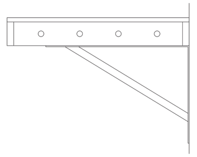

|
Yes, and no! Yes, it mounts to a wall but the similarity to a basic shelf ends there. Above all else, it needs to be strong and rigid. And unlike a simple display shelf it needs space beneath the surface to run all the wiring and mount other hidden features such as switch machines. And it must provide a perfectly level surface upon which to build the layout. Early in the planning stage I decided to use the classic ladder-style of construction with a solid top surface. I had also decided to avoid the use of dimensional lumber for the basic framing and instead use plywood ripped to the precise sizes I wanted using a table saw. The top would also be plywood. I chose plywood because of its inherent strength and also dimensional stability - it resists expansion, contraction, and warpage. But not all plywoods are the same. Standard plywood is made from softwoods such as spruce, pine, and fir, and, in my opinion, is garbage for our purposes because it will shrink, expand, twist, and warp. Cabinet-grade plywood is what we want. It is made from hardwoods such as birch or maple, contains more plies than the standard stuff, and is beautifully smooth and free of blemishes on both sides. Yes, it is more expensive, but using inferior materials will always produce inferior results. Fortunately, I live in an area with many Mennonites, some of whom have woodworking shops, and I was able to buy sheets of baltic birch plywood for a bit less than the standard stuff costs at a place like Home Depot. The ladder frame was built from 18mm plywood (just under 3/4"), ripped on a table saw into strips that were 2 5/8" wide. This provided adequate strength and also provided more than ample room for wiring runs, breakout boards, switch machines, etc. The top was made from 12mm ply (basically 1/2") cut to size after the framework was finished. Obviously, a shelf needs to be supported on the wall. Some people make their own supports from wood in a variety of configurations but I decided to go with steel shelf brackets. A trip to Home Depot was a real eye-opener. I 'borrowed' a carpenter's square from the tool department and headed to the aisle with the shelf brackets. The first brackets I looked at were the ubiquitous stamped steel ones that have a ridge formed in the center for strength. None of them were formed at a perfect 90° angle, and they were inconsistent with each other. Similar problems were found with several brands and styles. I finally stumbled upon some Everbilt 16" brackets (other sizes available) with a welded-in brace that were perfectly square and were rated for several hundred pounds. They weren't cheap (I needed 5) but I wanted a shelf would tolerate me leaning heavily on it and would keep things level.
My son volunteered to help with the construction. Together, we had the whole shelf framework finished in a day. Once the framework height was determined, a laser level was used and we drew a pencil line around all three walls. A carpenter's level could be used but the laser is dead accurate and speeds up the process. We also used an electronic stud finder and made small marks just above the previous line so we knew where the back frame rail could be attached to the wall. Like many houses, none of the corners were 90° and none of the walls were particularly straight, so we decided to build the shelf 'in situ' rather than pre-building it in sections. The first step was attaching all the back rails. We used 2 1/2" structural screws (2 per stud). I had the framework previously designed so we were able to avoid any conflict when installing cross-members later by skipping those studs (there were only 2 or 3). With the back rails in place, we started building the rest of the framework in sections, as can be seen in the following diagram.
Wherever cross members or face rail ends meet the back rails they were attached using a Kreg pocket hole jig and a pair of 1" Kreg screws, as well as carpenter's glue. A Milwaukee cordless nail gun was used to attach face rails to cross members with 2 1/2" brad nails. In a few spots the nailer wouldn't fit and a pair of 1 1/2" screws were used instead. As mentioned elsewhere, the irregular spacing of cross-members is to avoid interference with turnout locations. The layout overlaps almost half of a window which is why there is a cantilevered frame rail in section D. It is spaced out from the wall to clear the window frame. The right half of the window is required by code for egress or I might have lengthened that section. Blackout curtains prevent sunlight from hitting the layout. Wherever two sections meet, they are screwed together in several spots using 1 1/4" screws in both directions. With the framework done, I made a simple pattern jig out of leftover plywood and drilled holes through all the cross members, first with a 1/8" bit, then from both sides using a 5/8" Forstner bit (for nice clean holes), as illustrated below. This was more than adequate for all of my wiring runs.
 A top panel was made for each of the four sections from 12mm plywood. These were cut oversize and then trimmed to fit because of the previously mentioned issues regarding the walls and corners. These were attached to the frame with a generous number of 1 1/4" screws that were countersunk about 1/16". Drywall compound was used to fill all the screw holes and any minor flaws where top panels met, then it was all sanded perfectly smooth. And that was it... the actual shelf was done!
If you have comments (positive or negative), suggestions, questions, or have found any
|
|||||
|
|
© Copyright 2026 by Brian Ferguson - All Rights Reserved |